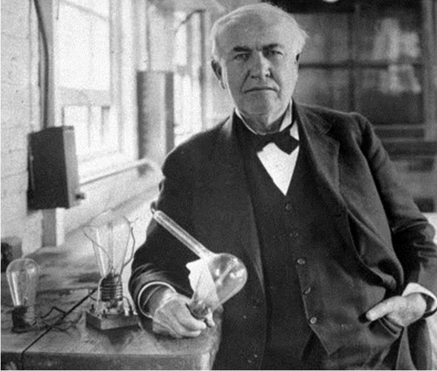

Thomas Alva Edison
Thomas Alva Edison (February 11, 1847 – October 18, 1931) was an American inventor and businessman, who has been described as America's greatest inventor. He developed many devices that greatly influenced life around the world, including the phonograph, the motion picture camera, and the long-lasting, practical electric light bulb. Dubbed "The Wizard of Menlo Park", he was one of the first inventors to apply the principles of mass production and large-scale teamwork to the process of invention, and is often credited with the creation of the first industrial research laboratory. Edison was a prolific inventor, holding 1,093 US patents in his name, as well as many patents in the United Kingdom, France, and Germany.Edison's inventions: electric light and power utilities, sound recording, and motion pictures all established major new industries worldwide. Edison's inventions contributed to mass communication and, in particular, telecommunications. These included a stock ticker, a mechanical vote recorder, a battery for an electric car, electrical power, recorded music and motion pictures.Edison developed a system of electric-power generation and distribution to homes, businesses, and factories – a crucial development in the modern industrialized world. His first power station was on Pearl Street in Manhattan, New York.